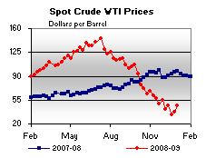
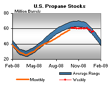

Released on January 7, 2009
(Next Release on January 14, 2009)
Oil Company Spending Patterns in a Volatile Market
With oil prices rising over the past few years, many people want to know about the impact on spending and investment by oil companies. Though prices have dropped in recent months, these questions remain relevant.
Every year, through its Financial Reporting System (FRS), EIA surveys the largest oil companies about their spending and investment decisions over the previous year. FRS data reported in EIA’s recently-released Performance Profiles of Major Energy Producers 2007 show that companies substantially increased investment spending in recent years. Spending for investing activities averaged $95 billion per year (in constant 2007 dollars) from 2000 to 2007, up from an average of $51 billion for the previous 8 years (Figure 1), and peaked at $179 billion in 2006. The higher investment spending resulted from higher cash flow from operations, which, in turn, resulted from the significant increases in oil prices that occurred over the past several years. Cash flow from operations for the FRS group peaked at $200 billion in 2006, and the average from 2000 to 2007 was double the average from 1992 to 1999.
A few definitions are helpful for understanding these trends. The cash flow statement reports cash flow from operations as well as uses of funds for investing activities and for financing activities. Cash flow from operations includes net income as well as deductions that do not require an outlay of cash, such as depreciation. Investing activities include capital expenditures for property, plant, and equipment net of funds received from sales of assets. Financing activities include funds raised by issuing stock and debt as well as funds used to repurchase the company’s stock, pay down debt, and pay dividends. The change in cash (and cash equivalents) at the end of the cash flow statement balances the sources and uses of cash for the year. A time series showing a consolidated cash flow statement for all FRS companies can be found in Table T3 of the Performance Profiles report.
While the increase in investment funding in recent years was substantial, it did not keep pace with the rise in cash flow. This outcome could reflect the time required to launch major investment projects, limitations on access to attractive resources, or a concern that oil prices would not be sustained at a level that would justify pursuit of available investment opportunities. In four of the last five years, the share of cash flow going into investing activities declined to the lowest levels since EIA started collecting data in the current form of the cash flow statement in 1986 (Figure 2). The wider difference between cash flow and investing provided additional funds that were used for repurchasing company stock and increasing dividends (Figure 3).
Now the process is in reverse. The recent sharp drop in oil prices will likely lead to lower cash flow from operations, which will result in reduced funding for both investing and financing activities. Stock repurchase plans can be scaled back quickly and dividends can be reduced to provide additional funding. The long-term debt to stockholders’ equity ratio of the FRS group is at the lowest level since 1981, which provides some room for debt financing.
Investment projects that are far along in development are likely to be completed, but many companies have already indicated that they are planning to reduce capital expenditures in 2009. This may have implications for future supply once the economy recovers and oil demand begins to increase.
Residential Heating Oil Prices Shift Their Momentum
Residential heating oil prices reversed their downward trend during the period ending January 5, 2009. The average residential heating oil price increased 3.5 cents last week to achieve 236.5 cents per gallon, leaving the price 103.0 cents lower than it was this same time last year. Wholesale heating oil prices rose solidly, by 23.0 cents, reaching 159.1 cents per gallon, which was a decrease of 116.6 cents per gallon compared to the same period last year.
The average residential propane price decreased by a whisker, declining 0.7 cent to reach 231.0 cents per gallon. This was a decrease of 25.3 cents from the 256.3 cents per gallon average for this same time last year. Wholesale propane prices increased 1.6 cents per gallon, rising from 80.7 cents to 82.3 cents per gallon. This was a decrease of 82.8 cents from the January 7, 2008 price of 165.1 cents per gallon.
Gasoline Prices Move Up While Diesel Prices Continue to Drop
For the first time since September 15, 2008, the national average price for regular gasoline increased. The price jumped 7.1 cents to 168.4 cents per gallon. Despite the increase, the price was 142.5 cents lower than a year ago. Although prices rose in the East Coast, Midwest, Gulf Coast and West Coast regions, prices slipped slightly in the Rocky Mountains and the Central Atlantic portion of the East Coast. The price rose 1.2 cents to 164.2 cents per gallon on the East Coast, while the price in the Central Atlantic slipped by 0.7 cent to 166.7 cents per gallon. In the Midwest, the price increased the most of any region, surging 16.6 cents to 173.3 cents per gallon. On the Gulf Coast, the average price rose 4.9 cents to 154.7 cents per gallon. In the Rocky Mountains, the price slipped 1.1 cents to 149.5 cents per gallon, resulting in the lowest price in the Nation and the lowest price for the region since January 5, 2004. The price on the West Coast rose to 184.6 cents per gallon, a 5.6-cent increase. In California, the price jumped 6.4 cents to 187.4 cents per gallon.
Diesel prices continued to erode, dropping for the fourteenth consecutive week nationwide. Prices fell in four of the five major regions of the country, with the national average price dropping 3.6 cents to 229.1 cents per gallon, 108.5 cents below the price a year ago and the lowest since June 13, 2005. On the East Coast, the average price slipped 4.3 cents to 238 cents per gallon, 105.6 cents less than last year. The price in the Midwest slid 4.2 cents to 227.2 cents per gallon. The average price in the Gulf Coast fell to 222.8 cents per gallon, a decline of 3.6 cents. The price in the Rocky Mountains dropped 3.5 cents to 221.5 cents per gallon, remaining the lowest among the major regions. Although the price on the West Coast rose by just two-tenths of a cent to 227.5 cents per gallon, the increase was the first since July 14, 2008. The average price in California dipped 0.2 cent to 223.9 cents per gallon.
December Draw on Propane Below Average
Near normal weather during December contributed to the moderate 4.0 million-barrel draw on inventories that was well below the most recent 5-year average of nearly 10.6 million barrels for this month. Moreover, propane inventories reported an unexpected 0.5 million-barrel gain last week, moving the Nation’s primary supply of propane up to an estimated 56.3 million barrels as of January 2, 2009. While the Midwest and the combined Rocky Mountain/West Coast regions showed inventories declining by 0.3 million barrels and 0.1 million barrels, respectively, other regions reported gains during this same time. East Coast inventories reported a 0.3 million-barrel gain last week while inventories in the Gulf Coast region grew by 0.7 million barrels. Propylene non-fuel use inventories also moved higher last week, up nearly 0.2 million barrels to account for a slightly higher 7.0 percent of total propane/propylene inventories from the prior week’s 6.8 percent share.
Text from the previous editions of “This Week In Petroleum” is now accessible through a link at the top right-hand corner of this page.
| Retail Prices (Cents Per Gallon) | |||||||
 |
|||||||
| Retail Data | Changes From | Retail Data | Changes From | ||||
| 01/05/09 | Week | Year | 01/05/09 | Week | Year | ||
| Gasoline | 168.4 | Heating Oil | 236.5 | ||||
| Diesel Fuel | 229.1 | Propane | 231.0 | ||||
| Spot Prices (Cents Per Gallon*) | |||||||||||||||||||||||||||||||||||
|  | |||||||||||||||||||||||||||||||||||
|
|||||||||||||||||||||||||||||||||||
| *Note: Crude Oil WTI Price in Dollars per Barrel. | |||||||||||||||||||||||||||||||||||
| Stocks (Million Barrels) | |||||||
 |
 | ||||||
| Stocks Data | Changes From | Stocks Data | Changes From | ||||
| 01/02/09 | Week | Year | 01/02/09 | Week | Year | ||
| Crude Oil | 325.4 | Distillate | 137.8 | ||||
| Gasoline | 211.4 | Propane | 56.333 | ||||